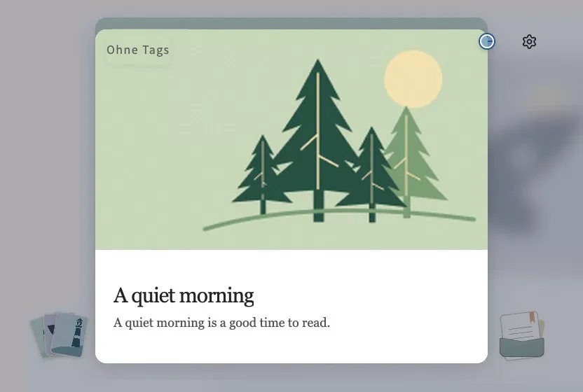
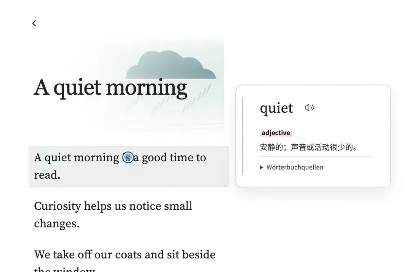
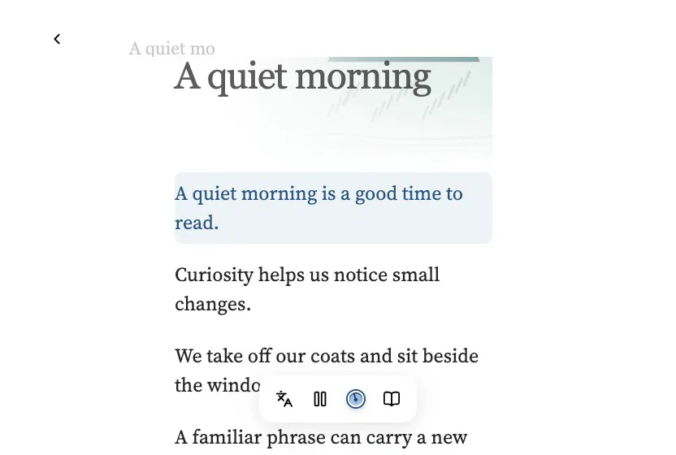
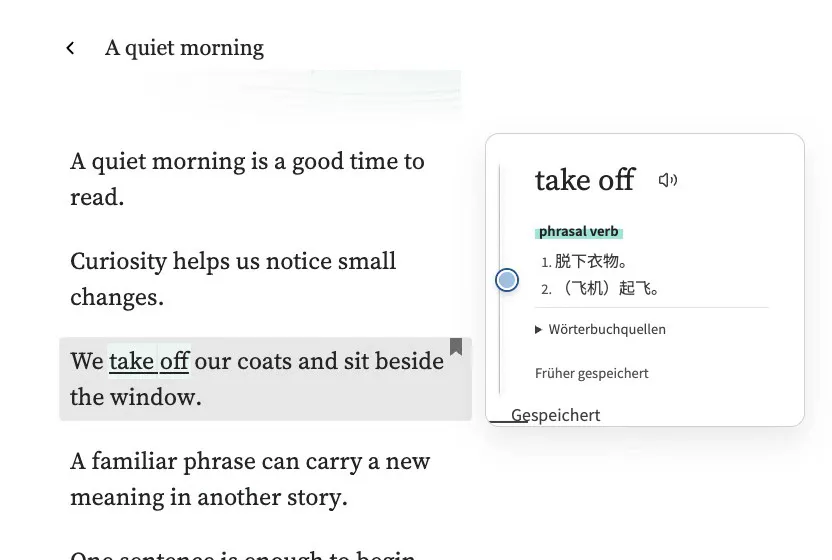
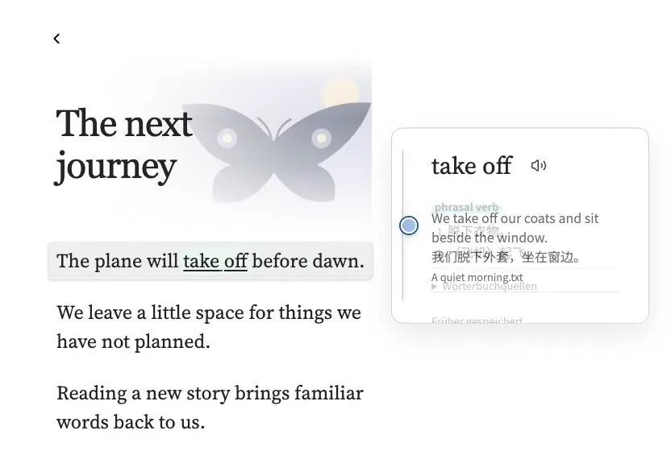

LexiCue / Englisch lesen
Ein Wort verstehen.Den Satz behalten.
Lies einen Text, der dich interessiert. Schlage ein Wort nach und speichere den Satz, in dem du ihm zum ersten Mal begegnet bist.
Bring deinen eigenen Lesestoff mit.

Tippe auf quiet und lies die Bedeutung.

Hör dir den ganzen Satz an.

Speichere den Ausdruck mit seinem Satz.

Beim Wiedersehen ist der erste Satz da.

Lies selbst eine Passage.
Öffne einen Beispieltext und wähle ein englisches Wort aus, um seine Bedeutung im Satz zu entdecken.
Für macOS v0.4.7 gibt es notarisierte DMG-Dateien für Apple Silicon und Intel. Windows und Android sind als v0.4.5 verfügbar.